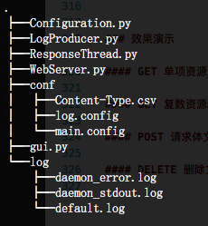
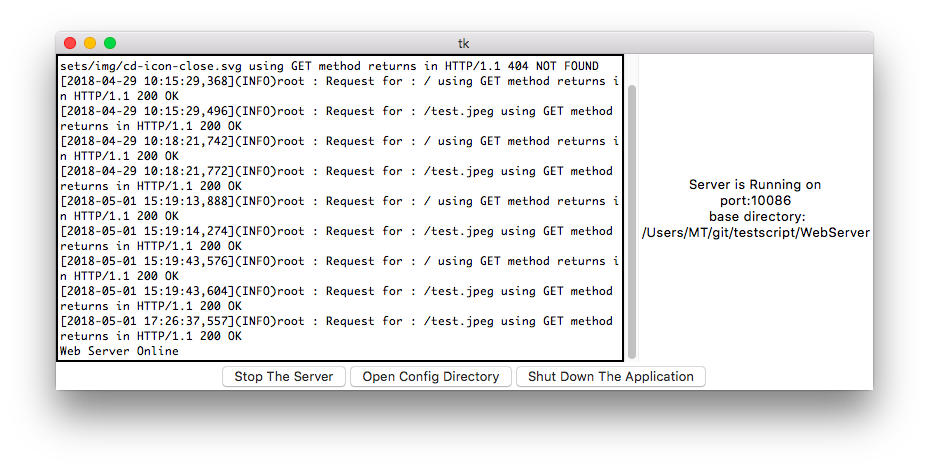
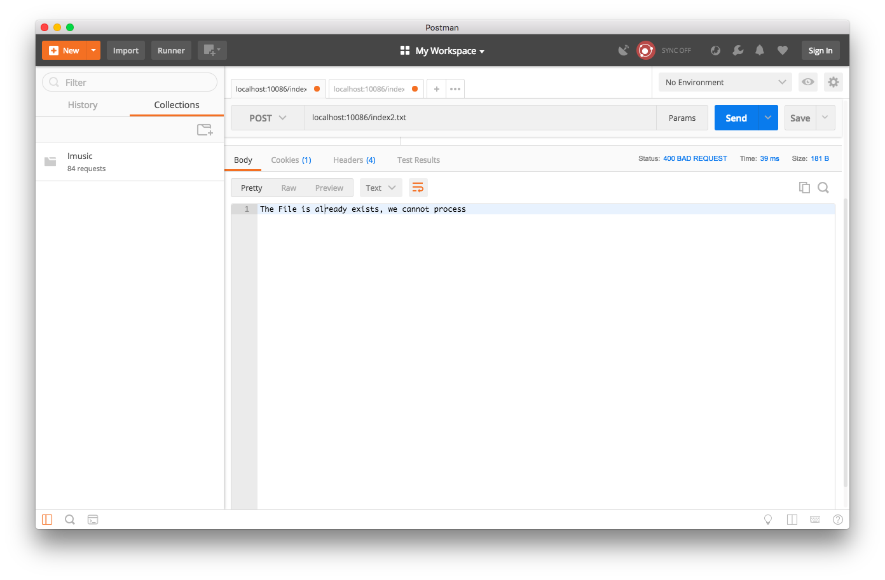
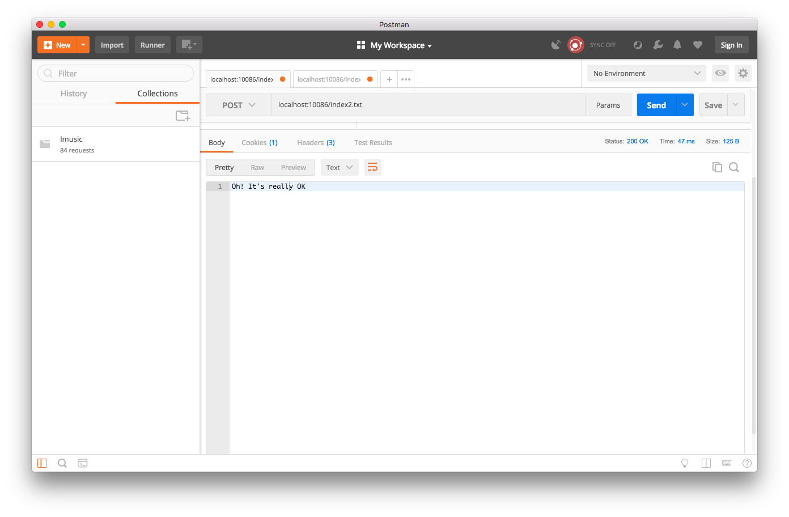

<!DOCTYPE html>
<html>
<head>
<title>main.md</title>
<meta http-equiv="Content-type" content="text/html;charset=UTF-8">

<style>
/*---------------------------------------------------------------------------------------------
 *  Copyright (c) Microsoft Corporation. All rights reserved.
 *  Licensed under the MIT License. See License.txt in the project root for license information.
 *--------------------------------------------------------------------------------------------*/

body {
	font-family: "Segoe WPC", "Segoe UI", "SFUIText-Light", "HelveticaNeue-Light", sans-serif, "Droid Sans Fallback";
	font-size: 14px;
	padding: 0 12px;
	line-height: 22px;
	word-wrap: break-word;
}

#code-csp-warning {
	position: fixed;
	top: 0;
	right: 0;
	color: white;
	margin: 16px;
	text-align: center;
	font-size: 12px;
	font-family: sans-serif;
	background-color:#444444;
	cursor: pointer;
	padding: 6px;
	box-shadow: 1px 1px 1px rgba(0,0,0,.25);
}

#code-csp-warning:hover {
	text-decoration: none;
	background-color:#007acc;
	box-shadow: 2px 2px 2px rgba(0,0,0,.25);
}


body.scrollBeyondLastLine {
	margin-bottom: calc(100vh - 22px);
}

body.showEditorSelection .code-line {
	position: relative;
}

body.showEditorSelection .code-active-line:before,
body.showEditorSelection .code-line:hover:before {
	content: "";
	display: block;
	position: absolute;
	top: 0;
	left: -12px;
	height: 100%;
}

body.showEditorSelection li.code-active-line:before,
body.showEditorSelection li.code-line:hover:before {
	left: -30px;
}

.vscode-light.showEditorSelection .code-active-line:before {
	border-left: 3px solid rgba(0, 0, 0, 0.15);
}

.vscode-light.showEditorSelection .code-line:hover:before {
	border-left: 3px solid rgba(0, 0, 0, 0.40);
}

.vscode-dark.showEditorSelection .code-active-line:before {
	border-left: 3px solid rgba(255, 255, 255, 0.4);
}

.vscode-dark.showEditorSelection .code-line:hover:before {
	border-left: 3px solid rgba(255, 255, 255, 0.60);
}

.vscode-high-contrast.showEditorSelection .code-active-line:before {
	border-left: 3px solid rgba(255, 160, 0, 0.7);
}

.vscode-high-contrast.showEditorSelection .code-line:hover:before {
	border-left: 3px solid rgba(255, 160, 0, 1);
}

img {
	max-width: 100%;
	max-height: 100%;
}

a {
	color: #4080D0;
	text-decoration: none;
}

a:focus,
input:focus,
select:focus,
textarea:focus {
	outline: 1px solid -webkit-focus-ring-color;
	outline-offset: -1px;
}

hr {
	border: 0;
	height: 2px;
	border-bottom: 2px solid;
}

h1 {
	padding-bottom: 0.3em;
	line-height: 1.2;
	border-bottom-width: 1px;
	border-bottom-style: solid;
}

h1, h2, h3 {
	font-weight: normal;
}

h1 code,
h2 code,
h3 code,
h4 code,
h5 code,
h6 code {
	font-size: inherit;
	line-height: auto;
}

a:hover {
	color: #4080D0;
	text-decoration: underline;
}

table {
	border-collapse: collapse;
}

table > thead > tr > th {
	text-align: left;
	border-bottom: 1px solid;
}

table > thead > tr > th,
table > thead > tr > td,
table > tbody > tr > th,
table > tbody > tr > td {
	padding: 5px 10px;
}

table > tbody > tr + tr > td {
	border-top: 1px solid;
}

blockquote {
	margin: 0 7px 0 5px;
	padding: 0 16px 0 10px;
	border-left: 5px solid;
}

code {
	font-family: Menlo, Monaco, Consolas, "Droid Sans Mono", "Courier New", monospace, "Droid Sans Fallback";
	font-size: 14px;
	line-height: 19px;
}

body.wordWrap pre {
	white-space: pre-wrap;
}

.mac code {
	font-size: 12px;
	line-height: 18px;
}

pre:not(.hljs),
pre.hljs code > div {
	padding: 16px;
	border-radius: 3px;
	overflow: auto;
}

/** Theming */

.vscode-light,
.vscode-light pre code {
	color: rgb(30, 30, 30);
}

.vscode-dark,
.vscode-dark pre code {
	color: #DDD;
}

.vscode-high-contrast,
.vscode-high-contrast pre code {
	color: white;
}

.vscode-light code {
	color: #A31515;
}

.vscode-dark code {
	color: #D7BA7D;
}

.vscode-light pre:not(.hljs),
.vscode-light code > div {
	background-color: rgba(220, 220, 220, 0.4);
}

.vscode-dark pre:not(.hljs),
.vscode-dark code > div {
	background-color: rgba(10, 10, 10, 0.4);
}

.vscode-high-contrast pre:not(.hljs),
.vscode-high-contrast code > div {
	background-color: rgb(0, 0, 0);
}

.vscode-high-contrast h1 {
	border-color: rgb(0, 0, 0);
}

.vscode-light table > thead > tr > th {
	border-color: rgba(0, 0, 0, 0.69);
}

.vscode-dark table > thead > tr > th {
	border-color: rgba(255, 255, 255, 0.69);
}

.vscode-light h1,
.vscode-light hr,
.vscode-light table > tbody > tr + tr > td {
	border-color: rgba(0, 0, 0, 0.18);
}

.vscode-dark h1,
.vscode-dark hr,
.vscode-dark table > tbody > tr + tr > td {
	border-color: rgba(255, 255, 255, 0.18);
}

.vscode-light blockquote,
.vscode-dark blockquote {
	background: rgba(127, 127, 127, 0.1);
	border-color: rgba(0, 122, 204, 0.5);
}

.vscode-high-contrast blockquote {
	background: transparent;
	border-color: #fff;
}
</style>

<style>
/* Tomorrow Theme */
/* http://jmblog.github.com/color-themes-for-google-code-highlightjs */
/* Original theme - https://github.com/chriskempson/tomorrow-theme */

/* Tomorrow Comment */
.hljs-comment,
.hljs-quote {
	color: #8e908c;
}

/* Tomorrow Red */
.hljs-variable,
.hljs-template-variable,
.hljs-tag,
.hljs-name,
.hljs-selector-id,
.hljs-selector-class,
.hljs-regexp,
.hljs-deletion {
	color: #c82829;
}

/* Tomorrow Orange */
.hljs-number,
.hljs-built_in,
.hljs-builtin-name,
.hljs-literal,
.hljs-type,
.hljs-params,
.hljs-meta,
.hljs-link {
	color: #f5871f;
}

/* Tomorrow Yellow */
.hljs-attribute {
	color: #eab700;
}

/* Tomorrow Green */
.hljs-string,
.hljs-symbol,
.hljs-bullet,
.hljs-addition {
	color: #718c00;
}

/* Tomorrow Blue */
.hljs-title,
.hljs-section {
	color: #4271ae;
}

/* Tomorrow Purple */
.hljs-keyword,
.hljs-selector-tag {
	color: #8959a8;
}

.hljs {
	display: block;
	overflow-x: auto;
	color: #4d4d4c;
	padding: 0.5em;
}

.hljs-emphasis {
	font-style: italic;
}

.hljs-strong {
	font-weight: bold;
}
</style>

<style>
/*
 * Markdown PDF CSS
 */

pre {
	background-color: #f8f8f8;
	border: 1px solid #cccccc;
	border-radius: 3px;
	overflow-x: auto;
	white-space: pre-wrap;
	overflow-wrap: break-word;
}

pre:not(.hljs) {
	padding: 23px;
	line-height: 19px;
}

blockquote {
	background: rgba(127, 127, 127, 0.1);
	border-color: rgba(0, 122, 204, 0.5);
}

.emoji {
	height: 1.4em;
}

/* for inline code */
:not(pre):not(.hljs) > code {
	color: #C9AE75; /* Change the old color so it seems less like an error */
	font-size: inherit;
}

</style>

</head>
<body>
<h1 id="python-web-%E6%9C%8D%E5%8A%A1%E5%99%A8%E8%AF%A6%E7%BB%86%E8%AE%BE%E8%AE%A1">Python Web 服务器详细设计</h1>
<!-- TOC -->
<ul>
<li><a href="#python-web-%E6%9C%8D%E5%8A%A1%E5%99%A8%E8%AF%A6%E7%BB%86%E8%AE%BE%E8%AE%A1">Python Web 服务器详细设计</a>
<ul>
<li><a href="#%E9%A1%B9%E7%9B%AE%E6%A6%82%E8%BF%B0">项目概述</a>
<ul>
<li><a href="#%E8%AF%AD%E8%A8%80%E4%B8%8E%E7%8E%AF%E5%A2%83">语言与环境</a></li>
<li><a href="#%E9%A1%B9%E7%9B%AE%E9%9C%80%E6%B1%82%E7%AE%80%E6%9E%90">项目需求简析</a></li>
</ul>
</li>
<li><a href="#%E6%9C%8D%E5%8A%A1%E5%99%A8%E5%9F%BA%E6%9C%AC%E9%80%BB%E8%BE%91%E8%AE%BE%E8%AE%A1">服务器基本逻辑设计</a>
<ul>
<li><a href="#webserver-%E4%B8%BB%E7%A8%8B%E5%BA%8F%E6%A8%A1%E5%9D%97%E8%AE%BE%E8%AE%A1">WebServer 主程序模块设计</a></li>
</ul>
</li>
<li><a href="#%E5%93%8D%E5%BA%94%E7%BA%BF%E7%A8%8B%E8%AE%BE%E8%AE%A1">响应线程设计</a>
<ul>
<li><a href="#%E5%8A%9F%E8%83%BD%E5%88%97%E8%A1%A8">功能列表</a></li>
<li><a href="#%E7%A8%8B%E5%BA%8F%E6%B5%81%E7%A8%8B">程序流程</a></li>
<li><a href="#%E5%93%8D%E5%BA%94%E7%BA%BF%E7%A8%8B%E4%B8%BB%E8%A6%81%E5%87%BD%E6%95%B0">响应线程主要函数</a></li>
</ul>
</li>
<li><a href="#gui-%E8%AE%BE%E8%AE%A1">GUI 设计</a>
<ul>
<li><a href="#%E5%8A%9F%E8%83%BD%E7%BB%84%E4%BB%B6">功能组件</a></li>
<li><a href="#%E7%9B%B8%E5%85%B3%E9%80%BB%E8%BE%91">相关逻辑</a></li>
<li><a href="#%E7%9B%B8%E5%85%B3%E5%87%BD%E6%95%B0%E8%AE%BE%E8%AE%A1">相关函数设计</a></li>
</ul>
</li>
<li><a href="#%E9%85%8D%E7%BD%AE%E6%96%87%E4%BB%B6%E8%AE%BE%E8%AE%A1">配置文件设计</a>
<ul>
<li><a href="#%E9%85%8D%E7%BD%AE%E5%86%85%E5%AE%B9">配置内容</a></li>
<li><a href="#%E7%9B%B8%E5%85%B3%E5%87%BD%E6%95%B0%E8%AE%BE%E8%AE%A1-1">相关函数设计</a></li>
</ul>
</li>
<li><a href="#%E8%BF%90%E8%A1%8C%E6%96%B9%E5%BC%8F%E4%B8%8E%E6%95%88%E6%9E%9C%E6%BC%94%E7%A4%BA">运行方式与效果演示</a>
<ul>
<li><a href="#%E8%BF%90%E8%A1%8C%E6%96%B9%E5%BC%8F">运行方式</a></li>
<li><a href="#%E6%95%88%E6%9E%9C%E6%BC%94%E7%A4%BA">效果演示</a>
<ul>
<li><a href="#%E6%9C%8D%E5%8A%A1%E5%99%A8%E8%BF%90%E8%A1%8C%E7%8A%B6%E6%80%81">服务器运行状态</a></li>
<li><a href="#get-%E5%8D%95%E9%A1%B9%E8%B5%84%E6%BA%90%E6%BC%94%E7%A4%BA">GET 单项资源演示</a></li>
<li><a href="#get-%E5%A4%8D%E6%95%B0%E8%B5%84%E6%BA%90%E6%BC%94%E7%A4%BA">GET 复数资源演示</a></li>
<li><a href="#post-%E8%AF%B7%E6%B1%82%E4%BD%93%E6%96%87%E4%BB%B6%E7%94%9F%E6%88%90%E5%92%8C-delete-%E8%AF%B7%E6%B1%82%E7%9B%AE%E6%A0%87%E6%96%87%E4%BB%B6%E5%88%A0%E9%99%A4%E6%BC%94%E7%A4%BA">POST 请求体文件生成和 DELETE 请求目标文件删除演示</a></li>
</ul>
</li>
</ul>
</li>
</ul>
</li>
</ul>
<!-- /TOC -->
<h2 id="%E9%A1%B9%E7%9B%AE%E6%A6%82%E8%BF%B0">项目概述</h2>
<h3 id="%E8%AF%AD%E8%A8%80%E4%B8%8E%E7%8E%AF%E5%A2%83">语言与环境</h3>
<ul>
<li>项目开发语言：
<ul>
<li>Python 2.7.10</li>
</ul>
</li>
<li>项目开发环境：
<ul>
<li>操作系统：MacOS</li>
</ul>
</li>
</ul>
<!-- - 项目运行环境：
  - FreeBSD 标准下的类 Unix 系统
    - 需要该标准以支持系统的 Tail 命令
  - 基于 Kneral 构建的 GUI 界面
    - 需要该标准以支持系统 GUI 和文件夹展示操作 -->
<h3 id="%E9%A1%B9%E7%9B%AE%E9%9C%80%E6%B1%82%E7%AE%80%E6%9E%90">项目需求简析</h3>
<p>根据作业要求，该简单 Web 服务器能够实现如下功能：</p>
<ol>
<li>响应 GET 请求，解析资源并返回</li>
<li>响应 POST 请求，解析请求体，并保存至目标文件</li>
<li>响应 Delete 请求，解析资源，尝试删除该文件</li>
<li>拒绝响应其他方式的请求，返回请求错误（400 BAD Request）</li>
<li>监测错误，返回服务器内部错误或网关错误（500 Internal Server Error | 502 BAD Gateway）</li>
<li>实现日志系统，能够记录系统的 HTTP 请求、运行状态等信息</li>
<li>实现 GUI，能够实现如下功能：
<ol>
<li>在 GUI 上启动和关闭服务器系统</li>
<li>在 GUI 上展示系统运行状态</li>
<li>在 GUI 上展示系统实时日志</li>
<li>打开配置文件夹</li>
<li>关闭并清理当次系统运行进程</li>
</ol>
</li>
</ol>
<h2 id="%E6%9C%8D%E5%8A%A1%E5%99%A8%E5%9F%BA%E6%9C%AC%E9%80%BB%E8%BE%91%E8%AE%BE%E8%AE%A1">服务器基本逻辑设计</h2>
<h3 id="webserver-%E4%B8%BB%E7%A8%8B%E5%BA%8F%E6%A8%A1%E5%9D%97%E8%AE%BE%E8%AE%A1">WebServer 主程序模块设计</h3>
<div align="center">
<p></p>
<p>系统整体逻辑</p>
</div>
本次作业使用多线程编程的方式实现多资源解析，该方式能够有效提高系统的响应能力，降低等待时间，从而更好地支持由 HTML 编写的测试界面
<p>系统的主体如上图所示，主进程负责接受来自客户端（可能是浏览器或 wget 等 HTTP 请求命令工具）的请求，在简单包装和获取目标报文后，分入单个子线程中，对目标报文进行解析和响应。</p>
<p>在每个子线程中的主要逻辑请参考<a href="#%E5%93%8D%E5%BA%94%E7%BA%BF%E7%A8%8B%E8%AE%BE%E8%AE%A1">后文的设计内容</a></p>
<p>系统主进程的主要工作包括：</p>
<ul>
<li>解析传入参数</li>
<li>初始化系统配置</li>
<li>根据传入参数决定启动或关闭系统</li>
<li>根据传入参数决定是否以守护进程形式启动</li>
<li>根据系统配置创建监听接口</li>
<li>接受（accept）请求，将请求体保存并发送往子线程</li>
</ul>
<p>因此，在系统主进程中设计如下函数：</p>
<pre class="hljs"><code><div><span class="hljs-function"><span class="hljs-keyword">def</span> <span class="hljs-title">init_socket</span><span class="hljs-params">(HOST, PORT)</span>:</span>
    <span class="hljs-comment"># create , set up , bind and listen the socket</span>
    <span class="hljs-keyword">while</span> <span class="hljs-keyword">True</span>:
        <span class="hljs-comment"># get the connection and client_address</span>
        <span class="hljs-comment"># recv the request message</span>
        <span class="hljs-comment"># create new thread to handle this message</span>
        
<span class="hljs-function"><span class="hljs-keyword">def</span> <span class="hljs-title">start_web_server</span><span class="hljs-params">(path=None)</span>:</span>
    <span class="hljs-comment"># read the config files</span>
    <span class="hljs-comment"># initialize the log system</span>
    <span class="hljs-comment"># initialize the listening socket</span>
    
<span class="hljs-function"><span class="hljs-keyword">def</span> <span class="hljs-title">daemonize</span> <span class="hljs-params">(switch=<span class="hljs-string">"False"</span>)</span>:</span>
  <span class="hljs-keyword">if</span> switch == <span class="hljs-string">"True"</span>:
    <span class="hljs-comment"># start the Web Server as a daemon process</span>

<span class="hljs-function"><span class="hljs-keyword">def</span> <span class="hljs-title">shut_down</span><span class="hljs-params">(switch=<span class="hljs-string">"False"</span>)</span>:</span>
    <span class="hljs-keyword">if</span> switch == <span class="hljs-string">"True"</span>:
        <span class="hljs-comment"># kill the process</span>
</div></code></pre>
<h2 id="%E5%93%8D%E5%BA%94%E7%BA%BF%E7%A8%8B%E8%AE%BE%E8%AE%A1">响应线程设计</h2>
<h3 id="%E5%8A%9F%E8%83%BD%E5%88%97%E8%A1%A8">功能列表</h3>
<ul>
<li>接受 HTTP 请求报文</li>
<li>解析 HTTP 请求报文
<ul>
<li>按行分割（该部分内容来自定义）</li>
<li>按分隔符切分各行
<ul>
<li>首部行，或称资源行</li>
<li>请求头部行</li>
<li>空行</li>
<li>请求体，不分割</li>
</ul>
</li>
</ul>
</li>
<li>解析请求资源，来源是首部行
<ul>
<li>请求方法</li>
<li>请求资源</li>
<li>HTTP 协议版本号</li>
</ul>
</li>
<li>按照各个资源的请求方式，switch(request_method)，分配各个响应逻辑
<ul>
<li>get_handler</li>
<li>post_handler</li>
<li>delete_handler</li>
<li>default_handler</li>
</ul>
</li>
<li>根据响应情况，封装响应报文
<ul>
<li>响应头
<ul>
<li>一部分根据响应情况填充
<ul>
<li>content_type</li>
<li>content_length</li>
</ul>
</li>
<li>一部分与响应情况无关
<ul>
<li>Server</li>
<li>date</li>
</ul>
</li>
</ul>
</li>
<li>响应体
<ul>
<li>默认返回情况</li>
<li>错误返回情况</li>
<li>实体返回情况</li>
</ul>
</li>
</ul>
</li>
<li>socket 传送</li>
</ul>
<h3 id="%E7%A8%8B%E5%BA%8F%E6%B5%81%E7%A8%8B">程序流程</h3>
<div align="center">
<p></p>
<p>响应流程</p>
</div>
针对上述的功能列表，我们设计了如图所示的响应线程逻辑
<h3 id="%E5%93%8D%E5%BA%94%E7%BA%BF%E7%A8%8B%E4%B8%BB%E8%A6%81%E5%87%BD%E6%95%B0">响应线程主要函数</h3>
<pre class="hljs"><code><div>
<span class="hljs-comment"># thread entry point</span>
<span class="hljs-function"><span class="hljs-keyword">def</span> <span class="hljs-title">httpRequestHandler</span><span class="hljs-params">(connection, HTTPRequest)</span>:</span>
  <span class="hljs-comment"># split the HttpRequest message</span>
  <span class="hljs-comment"># read the message splits</span>
  <span class="hljs-comment"># handle the resource request</span>
  <span class="hljs-comment"># build the response body</span>
  <span class="hljs-comment"># send the response message</span>

<span class="hljs-comment"># response header building function</span>
<span class="hljs-function"><span class="hljs-keyword">def</span> <span class="hljs-title">process_response_header</span><span class="hljs-params">(request_headers)</span>:</span>
  <span class="hljs-comment"># process the static information in response header</span>
  <span class="hljs-comment"># such as : Server, Date or Connection</span>
    
<span class="hljs-comment"># resource request handling function</span>
<span class="hljs-function"><span class="hljs-keyword">def</span> <span class="hljs-title">process_resource</span><span class="hljs-params">(request_method, request_resource, HTTPVersion, request_body,response_header)</span>:</span>
  <span class="hljs-comment"># call the different handler according to the request_method</span>
  <span class="hljs-keyword">try</span>:
    <span class="hljs-keyword">if</span> request_method == <span class="hljs-string">"GET"</span>: <span class="hljs-comment"># GET handler</span>
      <span class="hljs-keyword">return</span> processGET(request_resource, response_header)
    <span class="hljs-keyword">elif</span> request_method == <span class="hljs-string">"POST"</span>: <span class="hljs-comment"># POST handler</span>
      <span class="hljs-keyword">return</span> processPOST(request_resource, request_body, response_header)
    <span class="hljs-keyword">elif</span> request_method == <span class="hljs-string">"DELETE"</span>: <span class="hljs-comment"># DELETE handler</span>
      <span class="hljs-keyword">return</span> processDELETE(request_resource, response_header)
    <span class="hljs-keyword">else</span>: <span class="hljs-comment"># refuse to handle the request</span>
      response_header[LINE_LENGTH] = len(MSG_BAD_REQUEST)
      <span class="hljs-keyword">return</span> MSG_BAD_REQUEST, RESPONSE_HEADER_BAD_REQUEST
  <span class="hljs-keyword">except</span> Exception, e: <span class="hljs-comment"># error handling</span>
    <span class="hljs-keyword">return</span> MSG_BAD_GATEWAY, RESPONSE_HEADER_BAD_GATEWAY
    
<span class="hljs-function"><span class="hljs-keyword">def</span> <span class="hljs-title">processGET</span><span class="hljs-params">(request_resource, response_header)</span>:</span>
  <span class="hljs-comment"># try to get the file</span>
  <span class="hljs-comment"># read the file as binary content</span>
  <span class="hljs-comment"># response according to the running status</span>

<span class="hljs-function"><span class="hljs-keyword">def</span> <span class="hljs-title">processPOST</span><span class="hljs-params">(request_resource, request_body, response_header)</span>:</span>
  <span class="hljs-comment"># try to create the file</span>
  <span class="hljs-comment"># write the request body into file</span>
  <span class="hljs-comment"># response according to the running status</span>
  
<span class="hljs-function"><span class="hljs-keyword">def</span> <span class="hljs-title">processDELETE</span><span class="hljs-params">(requestResource, response_header)</span>:</span>
  <span class="hljs-comment"># get the file and try to remove</span>
  <span class="hljs-comment"># response according to the running status</span>
  
<span class="hljs-comment"># response body sending function</span>
<span class="hljs-function"><span class="hljs-keyword">def</span> <span class="hljs-title">send_response</span><span class="hljs-params">(client_connection, http_response)</span>:</span>
  <span class="hljs-comment"># send the http_response argument into the client_connection</span>
</div></code></pre>
<h2 id="gui-%E8%AE%BE%E8%AE%A1">GUI 设计</h2>
<h3 id="%E5%8A%9F%E8%83%BD%E7%BB%84%E4%BB%B6">功能组件</h3>
<ul>
<li>用文本框显示日志</li>
<li>用一个按钮来启动配置修改功能</li>
<li>用一个标签来监视 WebServer 的运行状态</li>
<li>用一个按钮来启动/关闭 WebServer 接口</li>
<li>用一个按钮来关闭程序</li>
</ul>
<h3 id="%E7%9B%B8%E5%85%B3%E9%80%BB%E8%BE%91">相关逻辑</h3>
<ul>
<li>组件绑定逻辑，即初始化过程</li>
<li>start_daemon_server，启动 WebServer</li>
<li>open_conf_directory，启动配置修改接口</li>
<li>shut_down，关闭系统</li>
<li>read_log，用于读取日志文件并追加在日志监听文本框内</li>
</ul>
<h3 id="%E7%9B%B8%E5%85%B3%E5%87%BD%E6%95%B0%E8%AE%BE%E8%AE%A1">相关函数设计</h3>
<pre class="hljs"><code><div><span class="hljs-comment"># GUI initial function</span>
<span class="hljs-function"><span class="hljs-keyword">def</span> <span class="hljs-title">__init__</span><span class="hljs-params">(self, master)</span>:</span>  
    Configuration.init() <span class="hljs-comment"># init the config</span>
    <span class="hljs-comment"># set btn_frame to contain the operation buttons</span>
    self.btn_frame = Frame(master) 
    <span class="hljs-comment"># set log_frame as for showing log</span>
    self.log_frame = Frame(master)
    self.log_box = Text(self.log_frame...)

    <span class="hljs-comment"># set status_frame as for showing system status</span>
    self.status_frame = Frame(master)

<span class="hljs-comment"># System control function</span>
<span class="hljs-function"><span class="hljs-keyword">def</span> <span class="hljs-title">start_daemon_server</span><span class="hljs-params">(self)</span>:</span>  
  <span class="hljs-comment"># start the web server</span>
  <span class="hljs-comment"># use a switch to count the button press action, decide whether turn on or turn off the system</span>

<span class="hljs-comment"># Configuration control function</span>
<span class="hljs-function"><span class="hljs-keyword">def</span> <span class="hljs-title">open_conf_directory</span><span class="hljs-params">(self)</span>:</span>
  <span class="hljs-comment"># call the system directory service</span>

<span class="hljs-comment"># GUI closing function</span>
<span class="hljs-function"><span class="hljs-keyword">def</span> <span class="hljs-title">shut_down</span><span class="hljs-params">(self)</span>:</span>
  <span class="hljs-comment"># close the web server process</span>
  <span class="hljs-comment"># close the gui process</span>

<span class="hljs-comment"># Log file listening function</span>
<span class="hljs-function"><span class="hljs-keyword">def</span> <span class="hljs-title">read_log</span><span class="hljs-params">(log_box,logfile)</span>:</span>
  <span class="hljs-keyword">pass</span>
</div></code></pre>
<h2 id="%E9%85%8D%E7%BD%AE%E6%96%87%E4%BB%B6%E8%AE%BE%E8%AE%A1">配置文件设计</h2>
<h3 id="%E9%85%8D%E7%BD%AE%E5%86%85%E5%AE%B9">配置内容</h3>
<p>纵观程序逻辑，其中需要配置的内容主要为：</p>
<ul>
<li>启动端口号</li>
<li>监听主机名</li>
<li>服务器资源解析基础路径</li>
<li>日志配置</li>
</ul>
<p>Python 提供了 ConfigParser，可以根据文件路径，自动解析配置文件，因此配置加载模块所需要做的主要内容为：</p>
<ul>
<li>解析命令行传入参数</li>
<li>从传入参数中读取配置文件夹路径</li>
<li>根据命名规则读取配置文件，并为设置各个值</li>
</ul>
<h3 id="%E7%9B%B8%E5%85%B3%E5%87%BD%E6%95%B0%E8%AE%BE%E8%AE%A1">相关函数设计</h3>
<pre class="hljs"><code><div><span class="hljs-comment"># initialize function</span>
<span class="hljs-function"><span class="hljs-keyword">def</span> <span class="hljs-title">init</span><span class="hljs-params">(config_path = None)</span>:</span>
    <span class="hljs-comment"># set all global variable according to the input variable config_path</span>
    <span class="hljs-comment"># save the content-type check list</span>
<span class="hljs-comment"># config path prefix process function </span>
<span class="hljs-function"><span class="hljs-keyword">def</span> <span class="hljs-title">setConfigPath</span><span class="hljs-params">(path = None)</span>:</span>
    <span class="hljs-comment"># set the global variable CONFIG_PATH </span>
    
<span class="hljs-comment"># input argument parse function</span>
<span class="hljs-function"><span class="hljs-keyword">def</span> <span class="hljs-title">parse_system_arg</span><span class="hljs-params">(argv)</span>:</span>
    <span class="hljs-comment"># parse the argument vector, save it into a map</span>
</div></code></pre>
<h2 id="%E8%BF%90%E8%A1%8C%E6%96%B9%E5%BC%8F%E4%B8%8E%E6%95%88%E6%9E%9C%E6%BC%94%E7%A4%BA">运行方式与效果演示</h2>
<p>本节将简要描述本次作业的成果是如何运行的</p>
<h3 id="%E8%BF%90%E8%A1%8C%E6%96%B9%E5%BC%8F">运行方式</h3>
<ol>
<li>环境安装</li>
</ol>
<blockquote>
<p>Python 环境安装</p>
</blockquote>
<p>在 Mac 环境下使用 HomeBrew</p>
<pre class="hljs"><code><div>brew install python2.7
</div></code></pre>
<p>或在 Linux 环境下使用其内置的包管理工具，这里以 Ubuntu 的 apt 为例</p>
<pre class="hljs"><code><div>sudo apt-get install python
</div></code></pre>
<ol start="2">
<li>
<p>文件列表</p>
 <div align="center">
<p></p>
<p>文件列表</p>
 </div>
<ul>
<li>程序源码，含可执行代码
<ul>
<li><a href="WebServer.py">WebServer.py</a> 该文件是主体程序文件，可以直接运行，也可以使用 Python 命令运行</li>
<li><a href="Configuration.py">Configuration.py</a> 配置解读模块源码</li>
<li><a href="ResponseThread.py">ResponseThread.py</a> 响应线程模块源码</li>
<li><a href="gui.py">gui.py</a> 增强界面模块源码，可以直接运行</li>
</ul>
</li>
<li>配置文件列表
<ul>
<li><a href="conf/Content-Type.csv">Content-Type.csv</a> 该文件存储有不同类型对应的 Content-Type 响应报文头的返回内容</li>
<li><a href="conf/log.config">log.config</a> 该文件存储有日志系统的配置内容</li>
<li><a href="conf/main.config">main.config</a> 该文件存储有本项目的主要配置内容</li>
</ul>
</li>
<li>日志文件列表
<ul>
<li><a href="log/default.log">default.log</a> 该文件为默认日志输出环境，可以在日志系统配置中重载</li>
<li><a href="log/daemon_error.log">daemon_error.log</a> 该文件为守护进程使用的错误输出文件</li>
<li><a href="log/daemon_stdout.log">daemon_stdout.log</a> 该文件为守护进程使用的标准输出文件</li>
</ul>
</li>
</ul>
</li>
<li>
<p>运行方式</p>
</li>
</ol>
<blockquote>
<p>命令行启动</p>
</blockquote>
<p>命令行启动方式要求 <code>WebServer.py</code> 文件具有运行权限，可以利用<code>ls -l</code>命令确认，启动命令为</p>
<pre class="hljs"><code><div>./WebServer.py -[d|c|p]
</div></code></pre>
<p>目前可以配置的参数有：</p>
<ul>
<li>-d=[True|False]，默认为 False，该参数代表是否以守护进程运行</li>
<li>-c=[True|False]，默认为 False，该参数代表是否强制结束所有运行实例</li>
<li>-p=[path_to_conf]，默认为空，但在系统中取值<code>conf/</code>，该参数代表系统的配置路径，可以使用绝对路径和相对路径，但是请在类 Unix 系统下使用</li>
</ul>
<p>命令行启动有两种方式，一是普通模式运行，二是守护进程模式运行</p>
<ol>
<li>普通模式运行</li>
</ol>
<p>普通模式运行命令实例</p>
<pre class="hljs"><code><div>./WebServer.py -d=False -p=conf/ -c=False
</div></code></pre>
<p>停止该模式可以直接使用 ctrl+c 组合键</p>
<ol start="2">
<li>守护进程模式运行</li>
</ol>
<p>守护进程启动命令实例</p>
<pre class="hljs"><code><div>./WebServer.py -d=True -p=conf/ -c=False
</div></code></pre>
<p>守护进程关闭命令实例</p>
<pre class="hljs"><code><div>./WebServer.py -c=True
</div></code></pre>
<p>该模式实际上是以一种类似僵尸模式运行的有序程序，需要利用 daemonize 函数关闭其两代父进程，并且在其中会调用 <code>chdir('/')</code> 方法改变当前进程运行目录，所以请务必注意Based_dir 的配置</p>
<blockquote>
<p>图形界面的运行</p>
</blockquote>
<p>本次实验参考了 XAMPP 的形式，服务器主体程序与图形界面系统分别编写和部署，启动图形界面的方法是在确认 gui.py 具有执行权限后直接运行该文件即可，配置文件的修改请手动修改目标文件</p>
<pre class="hljs"><code><div>./gui.py
</div></code></pre>
<p></p>
<h3 id="%E6%95%88%E6%9E%9C%E6%BC%94%E7%A4%BA">效果演示</h3>
<h4 id="%E6%9C%8D%E5%8A%A1%E5%99%A8%E8%BF%90%E8%A1%8C%E7%8A%B6%E6%80%81">服务器运行状态</h4>
<p>服务器的命令行运行状态，该模式运行后，会在 Shell 窗口处留下一个阻塞的进程，在使用 ctrl+c 强制结束进程后，可以看到 Shell 中显示了 KeyboardInterrupt 的提示，说明这个进程在运行过程中受到 Shell 本身的制约</p>
<pre class="hljs"><code><div>Serving HTTP on port 10086 ...
^CTraceback (most recent call last):
  File <span class="hljs-string">"./WebServer.py"</span>, line 80, <span class="hljs-keyword">in</span> &lt;module&gt;
    start_web_server(start_args.get(<span class="hljs-string">"-p"</span>,None))
  File <span class="hljs-string">"./WebServer.py"</span>, line 33, <span class="hljs-keyword">in</span> start_web_server
    init_socket(Configuration.HOST,Configuration.PORT) 
  File <span class="hljs-string">"./WebServer.py"</span>, line 24, <span class="hljs-keyword">in</span> init_socket
    client_connection, client_address = listen_socket.accept()<span class="hljs-string">"/System/Library/Frameworks/Python.framework/Versions/2.7/lib/python2.7/socket.py"</span>, line 206, <span class="hljs-keyword">in</span> accept
    sock, addr = self._sock.accept()
KeyboardInterrupt
</div></code></pre>
<p>服务器的守护进程运行状态，该模式运行后，不会在 Shell 窗口中留下任何痕迹，但是使用 <code>ps -ef | grep WebServer.py</code> 方式运行后可以看到该程序的 pid，说明改程序处在运行状态，但是并不会在 Shell 中阻塞运行</p>
<pre class="hljs"><code><div>⋊&gt; ~/g/t/W/PyWebServer ./WebServer.py -d=True -p=conf/         
⋊&gt; ~/g/t/W/PyWebServer ps -ef |grep WebServer.py         
  501 61324     1   0  5:22下午 ??         0:00.01 python ./WebServer.py -d=True -p=conf/
  501 61412 97805   0  5:23下午 ttys007    0:00.00 grep --color=auto WebServer.py
⋊&gt; ~/g/t/W/PyWebServer         
</div></code></pre>
<p>GUI 展示</p>
<p>系统的 GUI 如下图所示</p>
<ul>
<li>界面的左侧是日志系统，其会取回系统自启动后日志文件中最后10条记录，并在运行后自动更新</li>
<li>系统的右侧是系统运行状态，其会根据系统的配置显示系统的运行配置</li>
<li>系统的下方是控制按钮栏
<ul>
<li>左侧的按钮会根据系统是否处在运行状态切换字符串和功能</li>
<li>中间的按钮会根据系统的默认配置打开运行配置文件夹</li>
<li>右边的按钮会关闭服务器进程和图形界面</li>
</ul>
</li>
</ul>
<div align="center">
<p></p>
<p>系统图形界面展示</p>
</div>
<h4 id="get-%E5%8D%95%E9%A1%B9%E8%B5%84%E6%BA%90%E6%BC%94%E7%A4%BA">GET 单项资源演示</h4>
<p>现在演示的是直接从服务器中获取一个文件，文字内容太过简单，直接展示图片文件的读取效果</p>
<div align = "center">
<p></p>
<p>单张图片资源获取</p>
</div>
<p>个人信息和本次实验过程加工的 Response Header 请见红框</p>
<h4 id="get-%E5%A4%8D%E6%95%B0%E8%B5%84%E6%BA%90%E6%BC%94%E7%A4%BA">GET 复数资源演示</h4>
<p>get 方法获取复数资源的演示以从网络上下下来的一整套 HTML 为基础，如下图所示，能够看到请求了附属个文件和请求的时间轴关系</p>
<div align="center">
<p></p>
<p>GET 复数资源演示</p>
</div>
<h4 id="post-%E8%AF%B7%E6%B1%82%E4%BD%93%E6%96%87%E4%BB%B6%E7%94%9F%E6%88%90%E5%92%8C-delete-%E8%AF%B7%E6%B1%82%E7%9B%AE%E6%A0%87%E6%96%87%E4%BB%B6%E5%88%A0%E9%99%A4%E6%BC%94%E7%A4%BA">POST 请求体文件生成和 DELETE 请求目标文件删除演示</h4>
<p>该部分两部分展示，一是已经尚未具有目标文件，二是已经具有目标文件时的表现，这里使用  postman 作为请求生成工具</p>
<div align="center">
<p>
利用 postman 创建一个请求</p>
<p>
请求成功后的返回结果</p>
<p>
使用 Get 方法请求目标文件</p>
<p>
重复请求目标文件后报错</p>
<p>
请求删除目标文件</p>
<p>
可以再次创建目标文件了</p>
</div>

</body>
</html>
